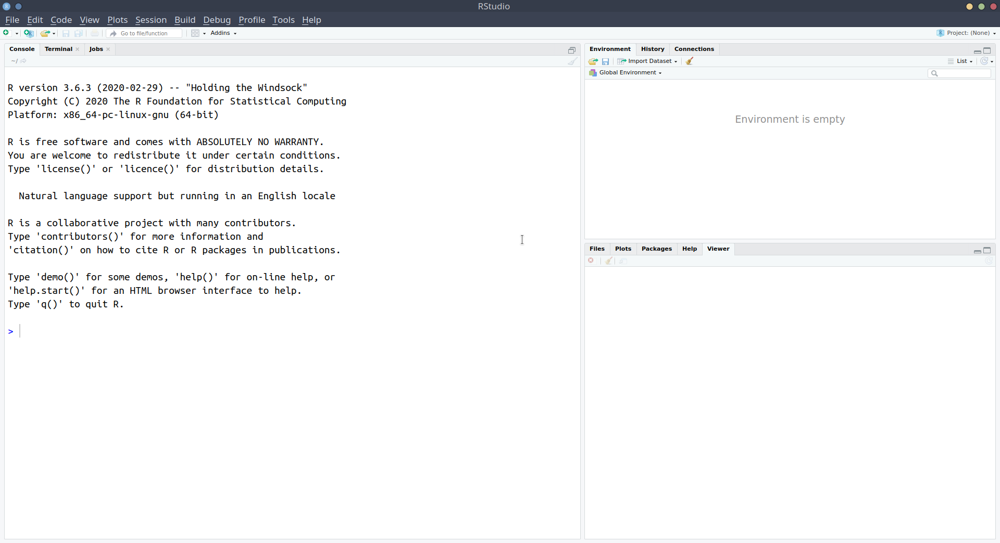

1A: A first look at R & RStudio
This reading:
- How does R work?
- How do we use the Rstudio interface?
The best way to learn R is to use it. Try following along with these reading by typing the code into your R script and running them. You will hopefully get the same output as is presented on this page below each bit of code. If you get errors and warnings, don’t panic - read them!
R is a calculator
When we first open RStudio, we should see something which looks more or less like the image in Figure 1, where there are several little windows. We are going to explore what each of these little windows offer by just diving in and starting to do things.
Starting in the left-hand window, you’ll notice the blue sign >.
This is where we R code gets executed.
Type 2+2, and hit Enter ↵.
You should discover that R is a calculator - R responds by telling us the answer (4).
Let’s work through some basic operations (adding, subtracting, etc). For instance, can you work out what R will give you for each of these operations?
Arithmetic operations
| Code | |
|---|---|
2 + 5 |
|
10 - 4 |
|
2 * 5 |
|
10 - (2 * 5) |
|
(10 - 2) * 5 |
|
10 / 2 |
|
3^2 |
(the ^ symbol is “to the power of”) |
Show me the output
| Code | Output |
|---|---|
2 + 5 |
7 |
10 - 4 |
6 |
2 * 5 |
10 |
10 - (2 * 5) |
0 |
(10 - 2) * 5 |
40 |
10 / 2 |
5 |
3^2 |
9 (the ^ symbol is “to the power of”) |
R can get stuck
Whenever you see the blue sign >, it means R is ready and waiting for you to provide a command.
If you type 10 + and press Enter, you’ll see that instead of > you are left with +. This means that R is waiting for more.
Either give it more (finish the command), or cancel the command by pressing the Escape key on your keyboard.
As well as performing arithmetic calculations, we can ask R things for which the answer is TRUE or FALSE, such as “Is 3 less than 5?”. If we type 3 < 5 and press Enter, then R should tell us that the statement we gave it is TRUE.
These computations don’t return numbers, but instead return logical values. There are few operators that we need to learn about here:
- Equality/Inequality: We use the symbols
==to mean “is equal to”, and the symbols!=for “is not equal to”.
- Less Than/Greater Than: To determine whether a value is less/greater than another value, we have our typical symbols
<and>. We also have<=and>=when we want to include “less/greater than or equal to”.
We can combine these with & for “and”, | for “or”, and ! for “not”, to ask R all sorts of things.
Try and work out what R should give you for each of these (or try it out yourself!):
Logical operations
| Code | Output |
|---|---|
3 > 5 |
|
3 <= 5 |
|
3 >= 3 |
|
3 == 5 |
|
(2 * 5) == 10 |
|
(2 * 5) != 11 |
|
(2 == 2) & (3 == 4) |
|
(2 == 2) | (3 == 4) |
|
(2 == 2) & !(3 == 4) |
TRUE |
Show me the output
| Code | Output |
|---|---|
3 > 5 |
FALSE |
3 <= 5 |
TRUE |
3 >= 3 |
TRUE |
3 == 5 |
FALSE |
(2 * 5) == 10 |
TRUE |
(2 * 5) != 11 |
TRUE |
(2 == 2) & (3 == 4) |
FALSE |
(2 == 2) | (3 == 4) |
TRUE |
(2 == 2) & !(3 == 4) |
TRUE |
FALSE and TRUE as 0 and 1
It will become useful to think of these logical values (TRUE and FALSE) as also having intrinsic numeric values of 0 and 1.
This is how R will treat them if you ask it to do something that requires the values to be numeric.
For example, the code TRUE + 3 will return 4, and FALSE + 3 will return 3.
R has a memory
We can also store things in R’s memory, and to do that we just need to give them a name.
Type x <- 5 and press Enter.
What has happened? We don’t get given an answer like we did with calculations such as 2 + 4. What we’ve done is stored in R’s memory something named x which has the value 5. We can now refer to the name and it will give us the value!
If we now type x and press Enter, it gives us whatever we assigned to the name “x”. So it gives us the number 5.
x[1] 5What is going to happen when we type x * 3? It will give us 15!
Assigning names to things in R
The <- symbol, pronounced arrow, is what we use to assign a value to a named object:
name <- value
Note, there are a few rules about names in R:
No spaces - spaces inside a name are not allowed (the spaces around the
<-don’t matter):
lucky_number <- 5✔lucky number <- 5❌Names must start with a letter:
lucky_number <- 5✔1lucky_number <- 5❌Case sensitive:
lucky_numberis different fromLucky_Numberhere is a set of words you can’t use as names, including: if, else, for, in, TRUE, FALSE, NULL, NA, NaN, function
(Don’t worry about remembering these, R will tell you if you make the mistake of trying to name a variable after one of these).
The Console and The Environment
If you are working along with us, you might have also noticed that something else happened when we executed the code x <- 5. The thing we named x with a value of 5 suddenly appeared in the top-right window. This is known as the environment (Figure 2), and it shows everything that we store in R.

So we’ve now made use of two of the panes that we see in RStudio:
Where code is run: When we’ve been writing and running R code (e.g. typing 2+5 or x<-5 and pressing Enter), we’ve been doing it in the “console”.
The console is where R code gets executed (i.e. where our coded instruction to R code is interpreted and acted on), but as we’ll see below, it isn’t where all R code gets written.
Where things get stored: We’ve also been learning about how we can store things in R’s memory (the environment) by assigning a name to them using the <- operator. The top-right pane of RStudio shows us the environment, where we can see everything that we have stored in R. Note that this also means we can keep track of what objects we have saved that are available for our use. If we never stored an object named “peppapig”, then R will give us an error when we do something like:
2*peppapigError in eval(expr, envir, enclos): object 'peppapig' not foundNow that we have an idea of what the console and the environment are for, we are well on our way. If you want a silly analogy, the console is like R’s mouth, where we feed it things, and the environment is just its memory, where it remembers what things are what. We can see these in Figure 3. Note however, that the console has been moved down to the bottom-left, as we are introducing a new pane above it. This is where we move to next.

R Scripts and the Editor
What if we want to edit our code? Whatever we write in the console just disappears upwards. What if we want to change things we did earlier on?
While the console is where code gets executed, it doesn’t have to be where code gets written.. We can write and edit our code in a separate place before we then send it to the console to be executed!!
The standard place to write and edit things is in an R scipt. We can open one by doing File > New File > R script, and a new file will open in the top-left pane of RStudio. The console will be shoved down to the bottom-left.
In the R script, we can write code. For instance, we might write:
x <- 210
y <- 15
x / yNotice that nothing happens when we write each line. It’s not like writing in the console where R tells us the answers. This is because this code is not yet being executed. We haven’t actually fed it to R.
There are a couple of useful ways we can send the code to R.
- Position your text-cursor (blinking vertical line) on the line of code we wish to run and press Ctrl+Enter (Windows) or Cmd+Enter (MacOS)
- Position your text-cursor (blinking vertical line) on the line of code we wish to run and press the “Run” button in the top right of the script.
When we do this, the line of code will be sent down to the console, where it will be executed, and R will do it’s thing.
For example, if we had sent the line x <- 210 down to the console, R would then store the number 210 with the name x in our environment (as in Figure 4). Additionally, it will move the text-cursor to the next line, so we can just press Ctrl+Enter again to run the next line (and so on.).

By writing our code in a file such as an R script before sending it to the console we can edit, save, and share our code. This makes it so much more useful than just using the console (which is more like writing on scratch paper, where we can’t keep anything).
For instance, let’s say we made a mistake earlier, and instead of “x” being 210, it should have been 211. Well, we can just edit the script, and re-run it.
Regularly save your scripts!
To save an R script that is open, we just
- File > Save (or Ctrl+S)
- Locate to the folder where we want to save the file.
- give it an appropriate name, and click save.
NOTE: When you save R script files, they terminate with a .R extension.
Looking ahead to RMarkdown
In addition to R scripts, there is another type of document we can create, known as “Rmarkdown”.
Rmarkdown documents combine the analytical power of R and the utility of a text-processor. We can have one document which contains all of our analysis as well as our written text, and can be compiled into a nicely formatted report. This saves us doing analysis in R and copying results across to Microsoft Word. It ensures our report accurately reflects our analysis. Everything that you’re reading now has all been written in Rmarkdown!
We’re going to learn more about Rmarkdown documents and how to write them later on, but the broad idea is that we can writing normal text interspersed with “code-chunks” (i.e., chunks of code!). RMarkdown documents looks much like an R script, only the code is contained within the grey-boxes, and text is written in between (see Figure 5). RMarkdown documents can then be compiled to create a lovely .pdf, .html, or .docx file.

The Four RStudio Panes
We’ve now seen almost all the different panes in RStudio:
- The console is where R code gets executed
- The environment is R’s memory, you can assign something a name and store it here, and then refer to it by name in your code.
- The editor is where you can write and edit R code in R scripts and Rmarkdown documents. You can then send this to the console for it to be executed.

We are yet to use the bottom-right window, but this is an easy one to explain. It is where we can see any plots that we create, where we can browse our files, and where we can ask R for some help documentation. We’ll make more use of this later on, but for now try typing plot(x = 4, y = 2) into the console and seeing what happens.
Projects and file organisation
We’re not going to speak too much about this here but one key thing to remember is that R is working from a specific place in your computer. You can find out where by typing getwd() into the console.
An easy way to keep things organised is to set up an “R project”. This basically associates a specific folder on your computer with your working in R, and it means it will automatically look for things in that folder.
We recommend that you start a project for this course (call it something like “usmr”). This will the be project that you open whenever you work on this course (RStudio will usually re-open the previous project you were working on when you closed it).
With that project open, we suggest that you start a new script for each week, in which you complete your exercises, and which you then remember to save!
If you haven’t already, we suggest you start an R project by using (in the top menu of RStudio), File > New Project and following the instructions. It will create a folder on your computer somewhere of your choosing, and you will now notice that if you click in the “Files” tab in the bottom right pane of RStudio, you can see the project folder!
Good Habits
Along with regular saving of work and organising your files, it will be very useful in the long-run if we get used to always “starting fresh” when we open R.
We need to start thinking of the code that we write in an R script as a set of consecutive instructions that we can give to R in order to achieve our goal. It’s just a blank slate on which we write (in language R understands) “do this. now do this. now do this..” and so on.
This means that the script contains all the information needed.
So we can now:
- Empty our environment
- Restart R
- Run all the code in our script (highlight multiple lines of code to run them all at once)
and we’re back to where we are! This is great for when we make mistakes (we’re going to make many many mistakes!), because we can just clear everything, start at the top of our script, and work downwards to figure out what has gone wrong.
Tidying up
To empty our environment, we can click on the little broomstick icon: .
To restart the R Session (not always necessary, but good practice) in the top menu, we choose Session > Restart R (or press Ctrl+Shift+F10).
The other very useful thing that we can do in a script is to write comments for ourselves or for others. By starting a line with a #, R will know that that entire line is not code, and so it won’t try to do anything with it. For instance, if we write these lines in our script, and send them both down to the console, nothing happens for the first line:
If we forget the #
The line below will add 5 to 2.
2+5Error: unexpected symbol in “The line”
Useful Settings
Below are a couple of our recommended settings for you to change as you begin your journey in R. After you’ve changed them, take a 5 minute break before moving on to the next reading.
1. Clean environments
As you use R more, you will store lots of things with different names. Throughout this course alone, you’ll probably name hundreds of different things. This could quickly get messy within our project.
We can make it so that we have a clean environment each time you open RStudio. This will be really handy.
- In the top menu, click Tools > Global Options…
- Then, untick the box for “Restore .RData into workspace at startup”, and change “Save workspace to .RData on exit” to Never:
2. Wrapping code
In the editor, you might end up with a line of code which is really long, but you can make RStudio ‘wrap’ the line, so that you can see it all, without having to scroll:
x <- 1+2+3+6+3+45+8467+356+8565+34+34+657+6756+456+456+54+3+78+3+3476+8+4+67+456+567+3+34575+45+2+6+9+5+6- In the top menu, click Tools > Global Options…
- In the left menu of the box, click “Code”
- Tick the box for “Soft-wrap R source files”
Comments